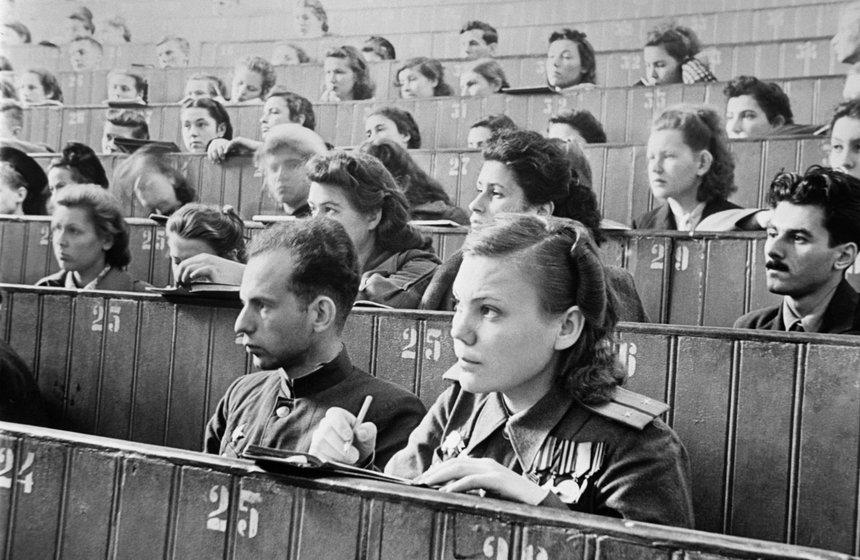
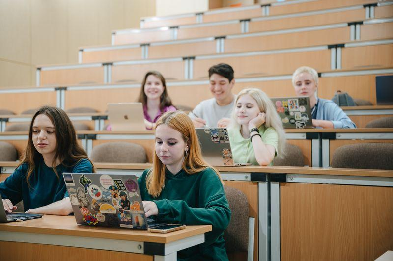

01
Учёба и технологии
От конспектов от руки до цифровых материалов

СССР
Бумага и библиотеки
Студенты записывали лекции от руки, занимались по печатным учебникам и искали нужную литературу в библиотеках.

Россия сегодня
Цифровая учёба
Электронные учебники, онлайн-курсы, цифровые библиотеки и ноутбуки помогают получать информацию быстрее.